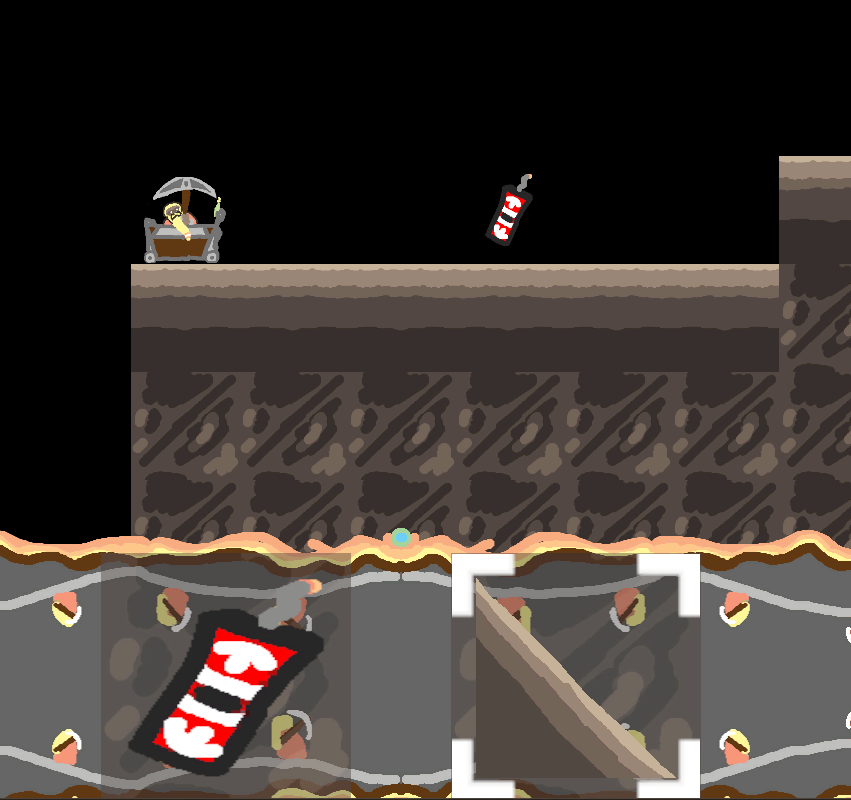
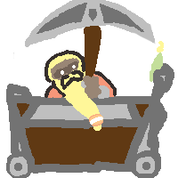
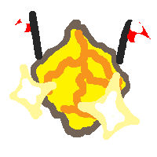
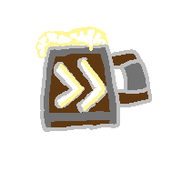
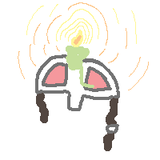
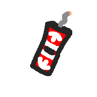
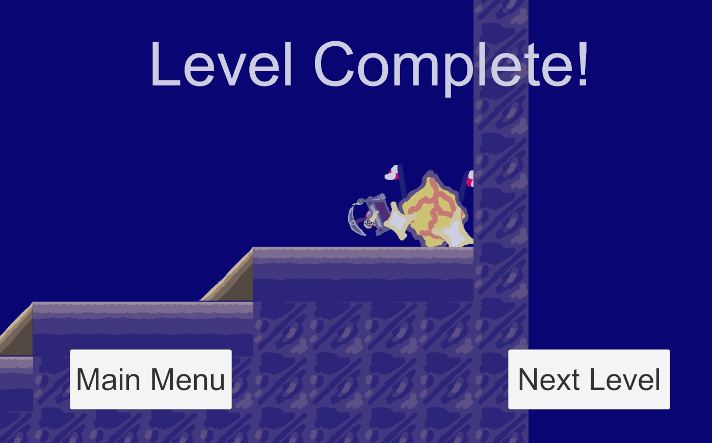

Awful Dwarfs is a game made in Unity game engine as part of a game jam hosted by RIT professors.
The jam lasted 48 hours, and I was on a team of five.
My team was prompted to make a puzzle game where players have to "plan then execute"
in a hand-drawn artstyle using an NES control layout (a d-pad and four buttons).
The final game tasks players with placing terrain and power-ups to get a dwarf in a minecart to the end of the level.
Each level provides a different selection of items the player can use to aid the dwarf.
My main responsibilities included the physics on the dwarf's minecart, the game loop architecture,
creating UI elements and adding them to the level screen.
Two of my group members were new to Unity, so I also helped them learn when they had questions.
The game was not completed in the initial 48 hour period, but I have taken time to fix the most game-breaking issues.
These issues include:

The character from Awful Dwarfs.

The gold goal tile.

Speedboost Ale

Armor Helmet

Jump Dynamite

Level Complete Screen